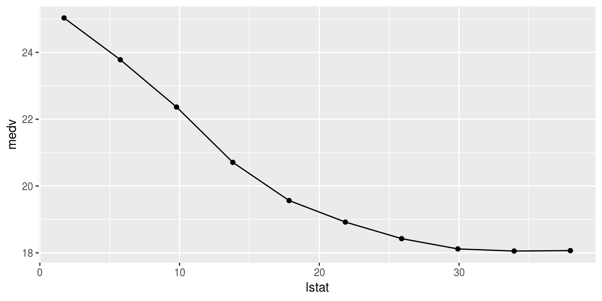
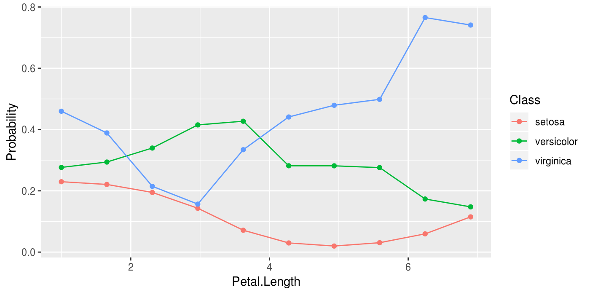
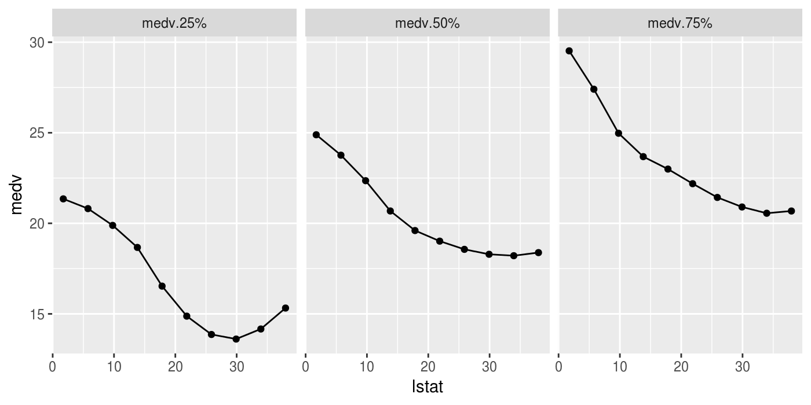
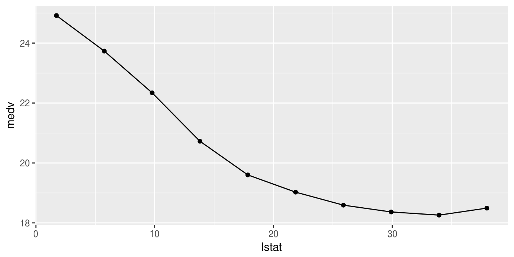
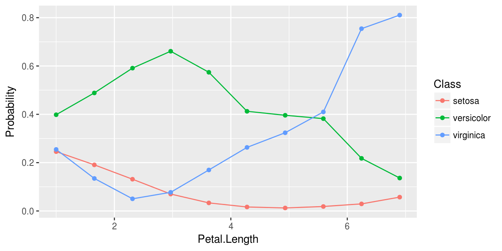
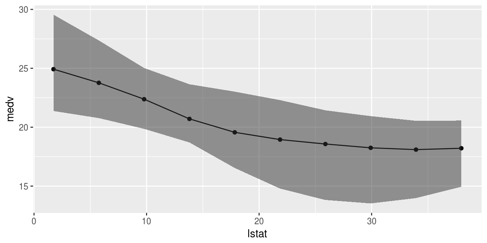
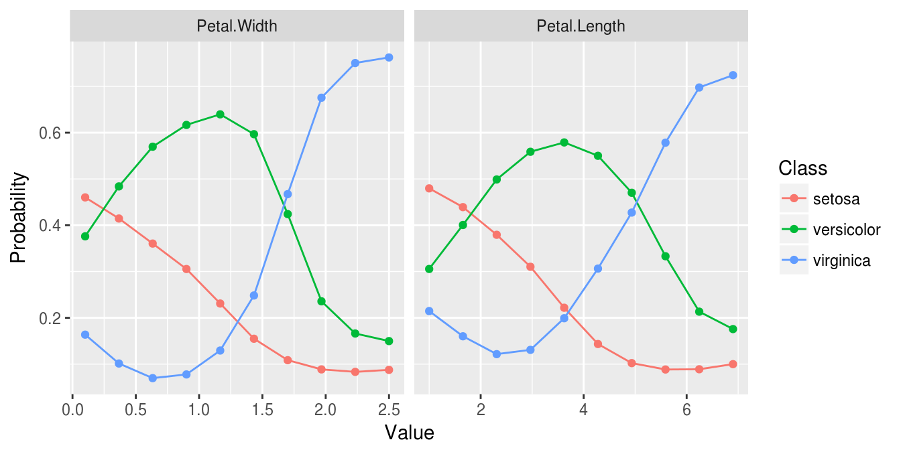
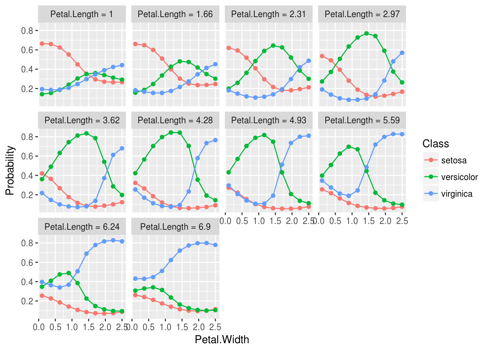

Learners use features to learn a prediction function and make predictions, but the effect of those features is often not apparent. mlr can estimate the partial dependence of a learned function on a subset of the feature space using generatePartialDependenceData().
Partial dependence plots reduce the potentially high dimensional function estimated by the learner, and display a marginalized version of this function in a lower dimensional space. For example suppose \(Y = f(X) + \epsilon\), where \(\mathbb{E}[\epsilon|X] = 0\). With \((X, Y)\) pairs drawn independently from this statistical model, a learner may estimate \(\hat{f}\), which, if \(X\) is high dimensional, can be uninterpretable. Suppose we want to approximate the relationship between some subset of \(X\). We partition \(X\) into two sets, \(X_s\) and \(X_c\) such that \(X = X_s \cup X_c\), where \(X_s\) is a subset of \(X\) of interest.
The partial dependence of \(f\) on \(X_s\) is
\[f_{X_s} = \mathbb{E}_{X_c}f(X_s, X_c).\]
\(X_c\) is integrated out. We use the following estimator:
\[\hat{f}_{X_s} = \frac{1}{N} \sum_{i = 1}^N \hat{f}(X_s, x_{ic}).\]
The individual conditional expectation of an observation can also be estimated using the above algorithm absent the averaging, giving \(\hat{f}^{(i)}_{X_s}\). This allows the discovery of features of \(\hat{f}\) that may be obscured by an aggregated summary of \(\hat{f}\).
The partial derivative of the partial dependence function, \(\frac{\partial \hat{f}_{X_s}}{\partial X_s}\), and the individual conditional expectation function, \(\frac{\partial \hat{f}^{(i)}_{X_s}}{\partial X_s}\), can also be computed. For regression and survival tasks the partial derivative of a single feature \(X_s\) is the gradient of the partial dependence function, and for classification tasks where the learner can output class probabilities the Jacobian. Note that if the learner produces discontinuous partial dependence (e.g., piecewise constant functions such as decision trees, ensembles of decision trees, etc.) the derivative will be 0 (where the function is not changing) or trending towards positive or negative infinity (at the discontinuities where the derivative is undefined). Plotting the partial dependence function of such learners may give the impression that the function is not discontinuous because the prediction grid is not composed of all discontinuous points in the predictor space. This results in a line interpolating that makes the function appear to be piecewise linear (where the derivative would be defined except at the boundaries of each piece).
The partial derivative can be informative regarding the additivity of the learned function in certain features. If \(\hat{f}^{(i)}_{X_s}\) is an additive function in a feature \(X_s\), then its partial derivative will not depend on any other features (\(X_c\)) that may have been used by the learner. Variation in the estimated partial derivative indicates that there is a region of interaction between \(X_s\) and \(X_c\) in \(\hat{f}\). Similarly, instead of using the mean to estimate the expected value of the function at different values of \(X_s\), instead computing the variance can highlight regions of interaction between \(X_s\) and \(X_c\).
See Goldstein, Kapelner, Bleich, and Pitkin (2014) for more details and their package ICEbox for the original implementation. The algorithm works for any supervised learner with classification, regression, and survival tasks.
Our implementation, following mlr’s visualization pattern, consists of the above mentioned function generatePartialDependenceData(), as well as two visualization functions, plotPartialDependence() and plotPartialDependenceGGVIS(). The former generates input (objects of class PartialDependenceData()) for the latter.
The first step executed by generatePartialDependenceData() is to generate a feature grid for every element of the character vector features passed. The data are given by the input argument, which can be a Task() or a data.frame. The feature grid can be generated in several ways. A uniformly spaced grid of length gridsize (default 10) from the empirical minimum to the empirical maximum is created by default, but arguments fmin and fmax may be used to override the empirical default (the lengths of fmin and fmax must match the length of features). Alternatively the feature data can be resampled, either by using a bootstrap or by subsampling.
lrn.classif = makeLearner("classif.ksvm", predict.type = "prob")
fit.classif = train(lrn.classif, iris.task)
pd = generatePartialDependenceData(fit.classif, iris.task, "Petal.Width")
## Loading required package: mmpf
pd
## PartialDependenceData
## Task: iris-example
## Features: Petal.Width
## Target: Petal.Width
## Derivative: FALSE
## Interaction: FALSE
## Individual: FALSE
## Class Probability Petal.Width
## 1: setosa 0.4821601 0.1000000
## 2: setosa 0.4545467 0.3666667
## 3: setosa 0.3948086 0.6333333
## 4: setosa 0.3042753 0.9000000
## 5: setosa 0.1982307 1.1666667
## 6: setosa 0.1292263 1.4333333
## ... (#rows: 30, #cols: 3)As noted above, \(X_s\) does not have to be unidimensional. If it is not, the interaction flag must be set to TRUE. Then the individual feature grids are combined using the Cartesian product, and the estimator above is applied, producing the partial dependence for every combination of unique feature values. If the interaction flag is FALSE (the default) then by default \(X_s\) is assumed unidimensional, and partial dependencies are generated for each feature separately. The resulting output when interaction = FALSE has a column for each feature, and NA where the feature was not used.
pd.lst = generatePartialDependenceData(fit.classif, iris.task, c("Petal.Width", "Petal.Length"), FALSE)
head(pd.lst$data)
## Class Probability Petal.Width Petal.Length
## 1: setosa 0.4821601 0.1000000 NA
## 2: setosa 0.4545467 0.3666667 NA
## 3: setosa 0.3948086 0.6333333 NA
## 4: setosa 0.3042753 0.9000000 NA
## 5: setosa 0.1982307 1.1666667 NA
## 6: setosa 0.1292263 1.4333333 NA
tail(pd.lst$data)
## Class Probability Petal.Width Petal.Length
## 1: virginica 0.2579229 NA 3.622222
## 2: virginica 0.3600929 NA 4.277778
## 3: virginica 0.4715960 NA 4.933333
## 4: virginica 0.6263962 NA 5.588889
## 5: virginica 0.7202616 NA 6.244444
## 6: virginica 0.7017818 NA 6.900000pd.int = generatePartialDependenceData(fit.classif, iris.task, c("Petal.Width", "Petal.Length"), TRUE)
pd.int
## PartialDependenceData
## Task: iris-example
## Features: Petal.Width, Petal.Length
## Target: Petal.Width, Petal.Length
## Derivative: FALSE
## Interaction: TRUE
## Individual: FALSE
## Class Probability Petal.Width Petal.Length
## 1: setosa 0.5854225 0.1 1.000000
## 2: setosa 0.5887595 0.1 1.655556
## 3: setosa 0.5491607 0.1 2.311111
## 4: setosa 0.4497179 0.1 2.966667
## 5: setosa 0.3266929 0.1 3.622222
## 6: setosa 0.2596571 0.1 4.277778
## ... (#rows: 300, #cols: 4)At each step in the estimation of \(\hat{f}_{X_s}\) a set of predictions of length \(N\) is generated. By default the mean prediction is used. For classification where predict.type = "prob" this entails the mean class probabilities. However, other summaries of the predictions may be used. For regression and survival tasks the function used here must either return one number or three, and, if the latter, the numbers must be sorted lowest to highest. For classification tasks the function must return a number for each level of the target feature.
As noted, the fun argument can be a function which returns three numbers (sorted low to high) for a regression task. This allows further exploration of relative feature importance. If a feature is relatively important, the bounds are necessarily tighter because the feature accounts for more of the variance of the predictions, i.e., it is “used” more by the learner. More directly setting fun = var identifies regions of interaction between \(X_s\) and \(X_c\).
lrn.regr = makeLearner("regr.ksvm")
fit.regr = train(lrn.regr, bh.task)
pd.regr = generatePartialDependenceData(fit.regr, bh.task, "lstat", fun = median)
pd.regr
## PartialDependenceData
## Task: BostonHousing-example
## Features: lstat
## Target: lstat
## Derivative: FALSE
## Interaction: FALSE
## Individual: FALSE
## medv lstat
## 1: 24.87325 1.730000
## 2: 23.74204 5.756667
## 3: 22.33758 9.783333
## 4: 20.70931 13.810000
## 5: 19.61387 17.836667
## 6: 19.05396 21.863333
## ... (#rows: 10, #cols: 2)pd.ci = generatePartialDependenceData(fit.regr, bh.task, "lstat",
fun = function(x) quantile(x, c(.25, .5, .75)))
pd.ci
## PartialDependenceData
## Task: BostonHousing-example
## Features: lstat
## Target: lstat
## Derivative: FALSE
## Interaction: FALSE
## Individual: FALSE
## medv Function lstat
## 1: 21.39754 medv.25% 1.730000
## 2: 20.83430 medv.25% 5.756667
## 3: 19.93169 medv.25% 9.783333
## 4: 18.71192 medv.25% 13.810000
## 5: 16.52573 medv.25% 17.836667
## 6: 14.98843 medv.25% 21.863333
## ... (#rows: 30, #cols: 3)pd.classif = generatePartialDependenceData(fit.classif, iris.task, "Petal.Length", fun = median)
pd.classif
## PartialDependenceData
## Task: iris-example
## Features: Petal.Length
## Target: Petal.Length
## Derivative: FALSE
## Interaction: FALSE
## Individual: FALSE
## Class Probability Petal.Length
## 1: setosa 0.24735217 1.000000
## 2: setosa 0.23540626 1.655556
## 3: setosa 0.20377818 2.311111
## 4: setosa 0.14572745 2.966667
## 5: setosa 0.07366003 3.622222
## 6: setosa 0.03086903 4.277778
## ... (#rows: 30, #cols: 3)In addition to bounds based on a summary of the distribution of the conditional expectation of each observation, learners which can estimate the variance of their predictions can also be used. The argument bounds is a numeric vector of length two which is added (so the first number should be negative) to the point prediction to produce a confidence interval for the partial dependence. The default is the .025 and .975 quantiles of the Gaussian distribution.
fit.se = train(makeLearner("regr.randomForest", predict.type = "se"), bh.task)
pd.se = generatePartialDependenceData(fit.se, bh.task, c("lstat", "crim"))
head(pd.se$data)
## lower medv upper lstat crim
## 1: 12.55087 31.45140 50.35193 1.730000 NA
## 2: 14.39725 26.15108 37.90492 5.756667 NA
## 3: 13.53265 23.57200 33.61134 9.783333 NA
## 4: 14.33399 22.13943 29.94487 13.810000 NA
## 5: 12.98967 20.44643 27.90318 17.836667 NA
## 6: 12.07742 19.89561 27.71379 21.863333 NA
tail(pd.se$data)
## lower medv upper lstat crim
## 1: 10.70109 21.96583 33.23057 NA 39.54849
## 2: 10.67293 21.95528 33.23763 NA 49.43403
## 3: 10.64689 21.94240 33.23791 NA 59.31957
## 4: 10.56271 21.92525 33.28778 NA 69.20512
## 5: 10.56282 21.92530 33.28779 NA 79.09066
## 6: 10.56282 21.92530 33.28779 NA 88.97620As previously mentioned if the aggregation function is not used, i.e., it is the identity, then the conditional expectation of \(\hat{f}^{(i)}_{X_s}\) is estimated. If individual = TRUE then generatePartialDependenceData() returns \(n\) partial dependence estimates made at each point in the prediction grid constructed from the features.
pd.ind.regr = generatePartialDependenceData(fit.regr, bh.task, "lstat", individual = TRUE)
pd.ind.regr
## PartialDependenceData
## Task: BostonHousing-example
## Features: lstat
## Target: lstat
## Derivative: FALSE
## Interaction: FALSE
## Individual: TRUE
## medv n lstat
## 1: 27.41063 1 1.730000
## 2: 25.28133 1 5.756667
## 3: 22.58441 1 9.783333
## 4: 19.82891 1 13.810000
## 5: 17.50257 1 17.836667
## 6: 15.92878 1 21.863333
## ... (#rows: 5060, #cols: 3)The resulting output, particularly the element data in the returned object, has an additional column idx which gives the index of the observation to which the row pertains.
For classification tasks this index references both the class and the observation index.
pd.ind.classif = generatePartialDependenceData(fit.classif, iris.task, "Petal.Length", individual = TRUE)
pd.ind.classif
## PartialDependenceData
## Task: iris-example
## Features: Petal.Length
## Target: Petal.Length
## Derivative: FALSE
## Interaction: FALSE
## Individual: TRUE
## Class Probability n Petal.Length
## 1: setosa 0.247652423 1 1.000000
## 2: setosa 0.231859972 1 1.655556
## 3: setosa 0.181275627 1 2.311111
## 4: setosa 0.084510403 1 2.966667
## 5: setosa 0.023591197 1 3.622222
## 6: setosa 0.008622825 1 4.277778
## ... (#rows: 4500, #cols: 4)Partial derivatives can also be computed for individual partial dependence estimates and aggregate partial dependence. This is restricted to a single feature at a time. The derivatives of individual partial dependence estimates can be useful in finding regions of interaction between the feature for which the derivative is estimated and the features excluded.
pd.regr.der = generatePartialDependenceData(fit.regr, bh.task, "lstat", derivative = TRUE)
head(pd.regr.der$data)
## medv lstat
## 1: -0.2273236 1.730000
## 2: -0.3547636 5.756667
## 3: -0.4269724 9.783333
## 4: -0.4335961 13.810000
## 5: -0.3807430 17.836667
## 6: -0.2845590 21.863333pd.regr.der.ind = generatePartialDependenceData(fit.regr, bh.task, "lstat", derivative = TRUE,
individual = TRUE)
head(pd.regr.der.ind$data)
## medv n lstat
## 1: -0.3536802 159 1.730000
## 2: -0.5258510 159 5.756667
## 3: -0.6136673 159 9.783333
## 4: -0.6020052 159 13.810000
## 5: -0.5017383 159 17.836667
## 6: -0.3413858 159 21.863333pd.classif.der = generatePartialDependenceData(fit.classif, iris.task, "Petal.Width", derivative = TRUE)
head(pd.classif.der$data)
## Class Probability Petal.Width
## 1: setosa -0.04670869 0.1000000
## 2: setosa -0.16274636 0.3666667
## 3: setosa -0.28281789 0.6333333
## 4: setosa -0.39432596 0.9000000
## 5: setosa -0.35495079 1.1666667
## 6: setosa -0.16444635 1.4333333pd.classif.der.ind = generatePartialDependenceData(fit.classif, iris.task, "Petal.Width", derivative = TRUE,
individual = TRUE)
head(pd.classif.der.ind$data)
## Class Probability n Petal.Width
## 1: setosa -0.005704149 132 0.1000000
## 2: setosa -0.022016786 132 0.3666667
## 3: setosa -0.067048088 132 0.6333333
## 4: setosa -0.155087517 132 0.9000000
## 5: setosa -0.245688652 132 1.1666667
## 6: setosa -0.219260823 132 1.4333333Results from generatePartialDependenceData() and generateFunctionalANOVAData() can be visualized with plotPartialDependence() and plotPartialDependenceGGVIS().
With one feature and a regression task the output is a line plot, with a point for each point in the corresponding feature’s grid.

With a classification task, a line is drawn for each class, which gives the estimated partial probability of that class for a particular point in the feature grid.

For regression tasks, when the fun argument of generatePartialDependenceData() is used, the bounds will automatically be displayed using a gray ribbon.

The same goes for plots of partial dependences where the learner has predict.type = "se".

When multiple features are passed to generatePartialDependenceData() but interaction = FALSE, facetting is used to display each estimated bivariate relationship.

When interaction = TRUE in the call to generatePartialDependenceData(), one variable must be chosen to be used for facetting, and a subplot for each value in the chosen feature’s grid is created, wherein the other feature’s partial dependences within the facetting feature’s value are shown. Note that this type of plot is limited to two features.

plotPartialDependenceGGVIS() can be used similarly, however, since ggvis currently lacks subplotting/facetting capabilities, the argument interact maps one feature to an interactive sidebar where the user can select a value of one feature.
When individual = TRUE each individual conditional expectation curve is plotted.

Plotting partial derivative functions works the same as partial dependence. Below are estimates of the derivative of the mean aggregated partial dependence function, and the individual partial dependence functions for a regression and a classification task respectively.
